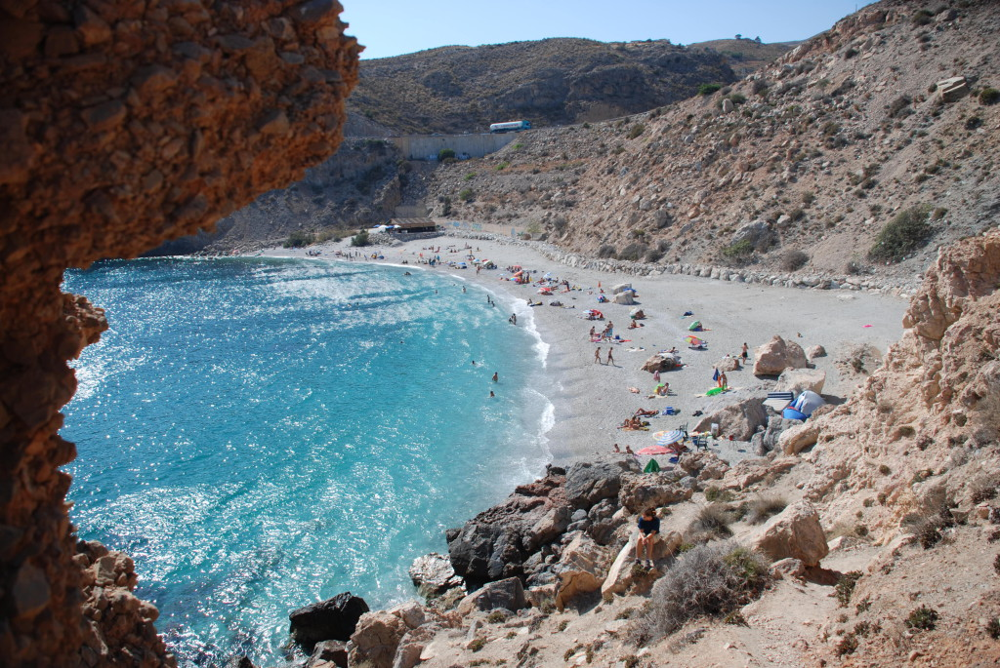
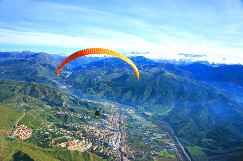
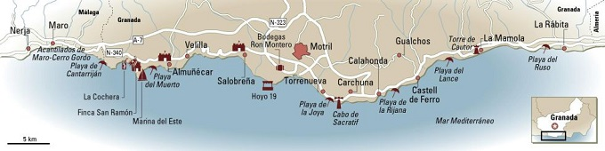
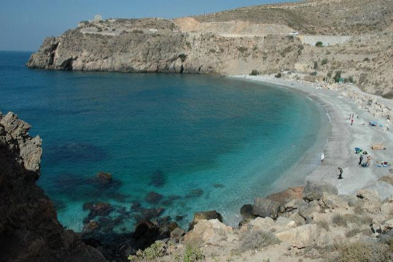
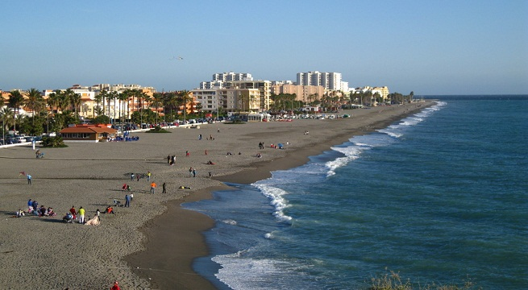
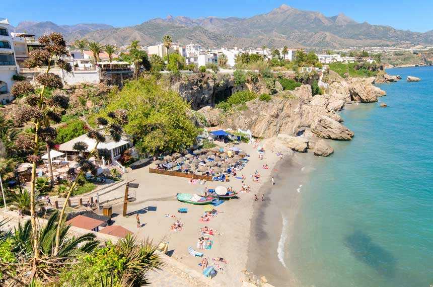
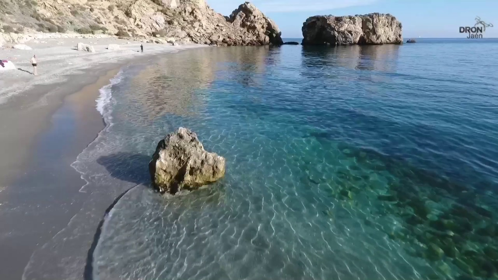

Save The Plants


What the coast offers?
Small and quiet coves
Next to the beaches of these localities there are infinity of small and quiet coves located in Albuñol, Castell de Ferro-Gualchos and La Mamola-Polopos. Nearby are the municipalities of Albondón, Ítrabo,Jete, Lentejí, Los Guájares, Lújar, Molvízar, Murtas, Otívar, Rubite, Sorvilán, Turón and Vélez de Benaudalla, surrounded by exuberant nature.
Golf, paragliding,hiking..
In addition to sea and culture, the Costa Tropical offers endless possibilities, such as golf, paragliding, hiking in the villages located in land, diving in the rich funds of Cerro Gordo and water sports,which have their center in the marina of Marina del Este(Almuñécar) and in the Motril Yacht Club.The tropical fruits can be tasted in salad or dessert, in a meal that can not miss rock fish such as snapper and sea bream and seafood like the shrimp. And with the coffee, the cane rum that is also made in the area.
Map with the Coasts of Granada
Characteristics of the beachs
| Beach | Characteristics | Photo |
| Playa del muerto | Playa del Muerto is a quiet, secluded and picturesque nudist beach located on the coast of Almuñécar. This beach with calm and crystalline waters is located between Punta de San José and Penon del Lobo. It is formed by a main beach and a small Cala, which are connected to each other by a pedestrian path. Playa del Muerto does not have a promenade, and access to it is made through some footbridges installed on the rocks at the end of Playa del Cotobro. |  |
|---|---|---|
| Playa de la Guardia en Salobreña | Surrounded by agricultural crops and cane fields for the most part, with the Rock on one end and apartments on the other, it has an area of just over 1km and a width of 25 meters. |  |
| Playa de Calahonda | The beach of Calahonda is located in the Malaga municipality of Mijas, between the Port of Cabopino and the beach of El Bombo. Located in front of the urbanization with which it shares its name, in the beach of Calahonda we can observe different areas: from the most urbanized with houses and nearby establishments, to the most virgin ones with abundant vegetation. |  |
| Playa de la Rijana | La Rijana beach is located in the province of Granada, on the outskirts of the town of Castell de Ferro, about 20 km east of Motríl. This beach of dark sand, offers exceptionally clean waters, being an ideal place for divers or just to do some snorkeling. |  |